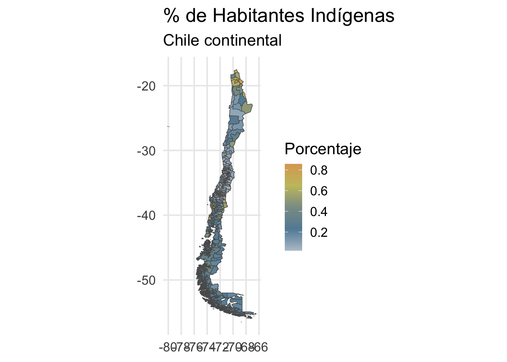
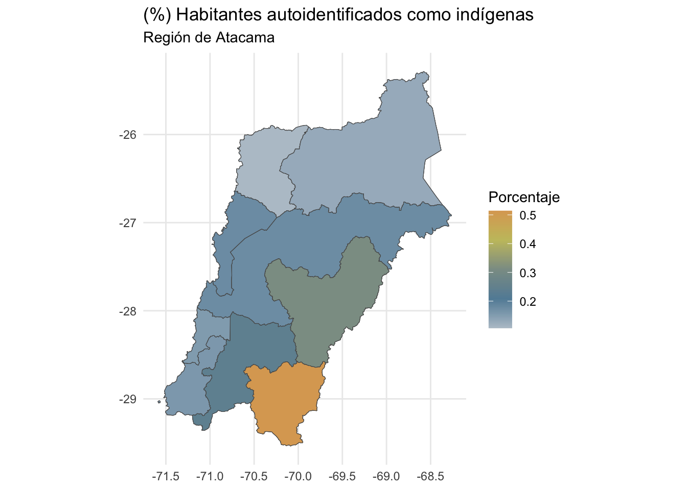

library(chilemapas) # mapas de chile
library(dplyr) # manipulación de datos
library(ggplot2) # visualización de datos
library(scales) # utilidad para visualización de datos
library(sf) # manipulación de datos geográficosMapas y Censo 2017 en R
InteRculturales
1 Introducción a ChileMapas
1.0.0.1 Cargar paquetes
1.0.0.2 Chile Mapas
mapa_comunas <- chilemapas::mapa_comunas
mapa_comunas# A tibble: 345 × 4
codigo_comuna codigo_provincia codigo_region geometry
<chr> <chr> <chr> <MULTIPOLYGON [°]>
1 01401 014 01 (((-68.86081 -21.28512, -68.921…
2 01403 014 01 (((-68.65113 -19.77188, -68.811…
3 01405 014 01 (((-68.65113 -19.77188, -68.635…
4 01402 014 01 (((-69.31789 -19.13651, -69.271…
5 01404 014 01 (((-69.39615 -19.06125, -69.400…
6 01107 011 01 (((-70.1095 -20.35131, -70.1243…
7 01101 011 01 (((-70.09894 -20.08504, -70.102…
8 02104 021 02 (((-68.98863 -25.38016, -68.987…
9 02101 021 02 (((-70.60654 -23.43054, -70.601…
10 02201 022 02 (((-67.94302 -22.38175, -67.955…
# ℹ 335 more rowsgrafico_comunas <- mapa_comunas |>
st_set_geometry(mapa_comunas$geometry) |> # asignar geometría
ggplot() + # gráfico
geom_sf() # capa geométrica
grafico_comunas +
theme_classic()grafico_comunas +
coord_sf(xlim = c(-77, -65)) +
theme_classic()Gráficos a nivel nacional
mapa_regiones <- mapa_comunas |>
group_by(codigo_region) |>
summarize(geometry = st_union(geometry)) # resumir los datos agrupados uniéndolos
mapa_regiones# A tibble: 16 × 2
codigo_region geometry
<chr> <GEOMETRY [°]>
1 01 POLYGON ((-69.93023 -21.4246, -69.92376 -21.42622, -69.91932 -…
2 02 MULTIPOLYGON (((-68.0676 -24.32856, -67.91698 -24.26902, -67.8…
3 03 MULTIPOLYGON (((-71.58497 -29.02456, -71.58844 -29.02838, -71.…
4 04 MULTIPOLYGON (((-70.54551 -31.30742, -70.53877 -31.30074, -70.…
5 05 MULTIPOLYGON (((-71.33832 -33.45237, -71.33763 -33.44836, -71.…
6 06 POLYGON ((-71.5477 -34.87458, -71.54211 -34.87581, -71.53566 -…
7 07 POLYGON ((-70.41724 -35.63022, -70.41108 -35.6302, -70.40146 -…
8 08 MULTIPOLYGON (((-73.53466 -36.97378, -73.53245 -36.97829, -73.…
9 09 MULTIPOLYGON (((-73.35306 -38.73343, -73.35396 -38.72799, -73.…
10 10 MULTIPOLYGON (((-73.1691 -41.87755, -73.16135 -41.87781, -73.1…
11 11 MULTIPOLYGON (((-75.41754 -48.73857, -75.43249 -48.74372, -75.…
12 12 MULTIPOLYGON (((-70.35563 -52.94478, -70.34688 -52.93971, -70.…
13 13 POLYGON ((-70.47405 -33.8624, -70.47327 -33.86269, -70.46068 -…
14 14 MULTIPOLYGON (((-73.39503 -39.88698, -73.39672 -39.89339, -73.…
15 15 POLYGON ((-69.07223 -19.02723, -69.06394 -19.02607, -69.04748 …
16 16 POLYGON ((-72.38553 -36.91169, -72.37685 -36.91617, -72.37034 …Gráficos a nivel regional.
grafico_regiones <- mapa_regiones |>
st_set_geometry(mapa_regiones$geometry) |> # especificar la geometría del mapa
ggplot() + # graficar
geom_sf() + # capa geográfica
coord_sf(xlim = c(-77, -65)) # recortar coordenadas
grafico_regiones +
theme_classic()Necesitamos los nombres, por lo que los pegamos. Una opción puede es obtener datos de Wikipedia con funciones de Webscrapping.
library(rvest)
# dirección de wikipedia con tabla de comunas de Chile
url <- "https://es.wikipedia.org/wiki/Anexo:Comunas_de_Chile"
# obtener tabla con datos de comunas con web scraping
tabla <- session(url) |>
read_html() |>
html_table(convert = FALSE)
tabla[[1]]# A tibble: 346 × 12
CUT (Código Único Territori…¹ Nombre `` Provincia Región `Superficie(km²)`
<chr> <chr> <chr> <chr> <chr> <chr>
1 15101 Arica "" Arica Arica… 4.799,4
2 15102 Camar… "" Arica Arica… 3.927
3 15201 Putre "" Parinaco… Arica… 5.902,5
4 15202 Gener… "" Parinaco… Arica… 2.244,4
5 01101 Iquiq… "" Iquique Tarap… 2.242,1
6 01107 Alto … "" Iquique Tarap… 572.9
7 01401 Pozo … "" Tamarugal Tarap… 13.765,8
8 01402 Camiña "" Tamarugal Tarap… 2.200,2
9 01403 Colch… "" Tamarugal Tarap… 4.015,6
10 01404 Huara "" Tamarugal Tarap… 10.474,6
# ℹ 336 more rows
# ℹ abbreviated name: ¹`CUT (Código Único Territorial)`
# ℹ 6 more variables: Población2020 <chr>, `Densidad(hab./km²)` <chr>,
# `IDH 2005` <chr>, `IDH 2005` <chr>, Latitud <chr>, Longitud <chr>Se realiza el respectivo procesamiento.
library(janitor)
Attaching package: 'janitor'The following objects are masked from 'package:stats':
chisq.test, fisher.testlibrary(stringr)
# limpiar datos
datos_comunas <- tabla[[1]] |>
clean_names() |>
# seleccionar y renombrar columnas
select(codigo_comuna = cut_codigo_unico_territorial,
nombre, region, superficie_km2,
poblacion = poblacion2020) |>
# eliminar espacios de la columna de población
mutate(poblacion = str_remove_all(poblacion, " "),
poblacion = as.numeric(poblacion)) |>
# eliminar los separadores de miles
mutate(superficie_km2 = str_remove_all(superficie_km2, "\\."),
# convertir comas a puntos
superficie_km2 = str_replace(superficie_km2, ",", "."),
superficie_km2 = as.numeric(superficie_km2))
datos_comunas# A tibble: 346 × 5
codigo_comuna nombre region superficie_km2 poblacion
<chr> <chr> <chr> <dbl> <dbl>
1 15101 Arica Arica y Parinacota 4799. 247552
2 15102 Camarones Arica y Parinacota 3927 1233
3 15201 Putre Arica y Parinacota 5902. 2515
4 15202 General Lagos Arica y Parinacota 2244. 810
5 01101 Iquique Tarapacá 2242. 223463
6 01107 Alto Hospicio Tarapacá 5729 129999
7 01401 Pozo Almonte Tarapacá 13766. 17395
8 01402 Camiña Tarapacá 2200. 1375
9 01403 Colchane Tarapacá 4016. 1583
10 01404 Huara Tarapacá 10475. 3000
# ℹ 336 more rowsmapa_comunas_2 <- mapa_comunas |>
# adjuntar datos al mapa, coincidiendo por columna de código de comunas
left_join(datos_comunas,
by = join_by(codigo_comuna)) |>
relocate(geometry, .after = 0) # tirar geometría al final
mapa_comunas_2# A tibble: 345 × 8
codigo_comuna codigo_provincia codigo_region nombre region superficie_km2
<chr> <chr> <chr> <chr> <chr> <dbl>
1 01401 014 01 Pozo Almo… Tarap… 13766.
2 01403 014 01 Colchane Tarap… 4016.
3 01405 014 01 Pica Tarap… 8934.
4 01402 014 01 Camiña Tarap… 2200.
5 01404 014 01 Huara Tarap… 10475.
6 01107 011 01 Alto Hosp… Tarap… 5729
7 01101 011 01 Iquique Tarap… 2242.
8 02104 021 02 Taltal Antof… 20405.
9 02101 021 02 Antofagas… Antof… 30718.
10 02201 022 02 Calama Antof… 15597.
# ℹ 335 more rows
# ℹ 2 more variables: poblacion <dbl>, geometry <MULTIPOLYGON [°]>mapa_comunas_2 |>
st_set_geometry(mapa_comunas_2$geometry) |> # asignar geometría
ggplot() + # gráfico
aes(fill = poblacion) +
geom_sf(linewidth = 0) + # capa geométrica
theme_classic() +
scale_fill_distiller(type = "seq", palette = 12,
labels = label_comma(big.mark = ".")) + # colores
scale_x_continuous(breaks = seq(-76, -65, length.out = 3) |> floor()) + # escala x
coord_sf(xlim = c(-77, -65)) + # recortar coordenadas
theme(legend.key.width = unit(3, "mm"))mapa_comunas_2 |>
st_set_geometry(mapa_comunas_2$geometry) |>
ggplot() +
aes(fill = superficie_km2) + # variable de relleno
geom_sf(linewidth = 0) +
theme_classic() +
scale_fill_distiller(type = "seq", palette = 11,
labels = label_comma(big.mark = ".")) +
scale_x_continuous(breaks = seq(-76, -65, length.out = 3) |> floor()) +
coord_sf(xlim = c(-77, -65)) +
theme(legend.key.width = unit(3, "mm"))# filtrar datos
mapa_comunas_filtro <- mapa_comunas_2 |>
filter(codigo_region == "06")
# mapa
mapa_comunas_filtro |>
st_set_geometry(mapa_comunas_filtro$geometry) |>
ggplot() +
aes(fill = poblacion) +
geom_sf(linewidth = 0.12, color = "white") +
geom_sf_text(aes(label = comma(poblacion, big.mark = ".")),
size = 2, color = "white", check_overlap = T) +
theme_classic() +
scale_fill_distiller(type = "seq", palette = 12,
labels = label_comma(big.mark = ".")) +
theme(legend.key.width = unit(3, "mm")) +
theme(axis.title = element_blank())
library(rvest)
# dirección del sitio del banco central
url <- "https://si3.bcentral.cl/Siete/ES/Siete/Cuadro/CAP_CCNN/MN_CCNN76/CCNN2018_PIB_REGIONAL_N/637899740344107786"
# obtener tabla con datos de comunas con web scraping
tabla_pib <- session(url) |>
read_html() |>
html_table(convert = FALSE)datos_regiones <- tabla_pib [[1]] |>
janitor::clean_names() |>
select(region = serie, pib = x2023) |>
mutate(pib = str_remove_all(pib, "\\."),
pib = as.numeric(pib)) |>
filter(str_detect(region, "Región"))
datos_regiones# A tibble: 16 × 2
region pib
<chr> <dbl>
1 Región de Arica y Parinacota 2169
2 Región de Tarapacá 7892
3 Región de Antofagasta 31290
4 Región de Atacama 6004
5 Región de Coquimbo 9174
6 Región de Valparaíso 20275
7 Región Metropolitana de Santiago 109143
8 Región del Libertador General Bernardo OHiggins 11910
9 Región del Maule 10348
10 Región de Ñuble 4106
11 Región del Biobío 16731
12 Región de La Araucanía 7743
13 Región de Los Ríos 3561
14 Región de Los Lagos 9432
15 Región de Aysén del General Carlos Ibáñez del Campo 1573
16 Región de Magallanes y de la Antártica Chilena 2490datos_regiones_2 <- datos_regiones |>
mutate(codigo_region = case_when(
str_detect(region, "Arica") ~ 15,
str_detect(region, "Tarapacá") ~ 1,
str_detect(region, "Antofagasta") ~ 2,
str_detect(region, "Atacama") ~ 3,
str_detect(region, "Coquimbo") ~ 4,
str_detect(region, "Valparaíso") ~ 5,
str_detect(region, "Metropolitana") ~ 13,
str_detect(region, "Libertador General") ~ 6,
str_detect(region, "Maule") ~ 7,
str_detect(region, "Ñuble") ~ 16,
str_detect(region, "Biobío") ~ 8,
str_detect(region, "Araucanía") ~ 9,
str_detect(region, "Los Ríos") ~ 14,
str_detect(region, "Los Lagos") ~ 10,
str_detect(region, "Aysén") ~ 11,
str_detect(region, "Magallanes") ~ 12
)) |>
rename(nombre_region = region)mapa_regiones_2 <- mapa_regiones |>
mutate(codigo_region = as.numeric(codigo_region)) |>
left_join(datos_regiones_2,
by = join_by(codigo_region)) |>
relocate(geometry, .after = 0) # tirar columna al final
mapa_regiones_2# A tibble: 16 × 4
codigo_region nombre_region pib geometry
<dbl> <chr> <dbl> <GEOMETRY [°]>
1 1 Región de Tarapacá 7892 POLYGON ((-69.93023 -21.…
2 2 Región de Antofagasta 31290 MULTIPOLYGON (((-68.0676…
3 3 Región de Atacama 6004 MULTIPOLYGON (((-71.5849…
4 4 Región de Coquimbo 9174 MULTIPOLYGON (((-70.5455…
5 5 Región de Valparaíso 20275 MULTIPOLYGON (((-71.3383…
6 6 Región del Libertador General… 11910 POLYGON ((-71.5477 -34.8…
7 7 Región del Maule 10348 POLYGON ((-70.41724 -35.…
8 8 Región del Biobío 16731 MULTIPOLYGON (((-73.5346…
9 9 Región de La Araucanía 7743 MULTIPOLYGON (((-73.3530…
10 10 Región de Los Lagos 9432 MULTIPOLYGON (((-73.1691…
11 11 Región de Aysén del General C… 1573 MULTIPOLYGON (((-75.4175…
12 12 Región de Magallanes y de la … 2490 MULTIPOLYGON (((-70.3556…
13 13 Región Metropolitana de Santi… 109143 POLYGON ((-70.47405 -33.…
14 14 Región de Los Ríos 3561 MULTIPOLYGON (((-73.3950…
15 15 Región de Arica y Parinacota 2169 POLYGON ((-69.07223 -19.…
16 16 Región de Ñuble 4106 POLYGON ((-72.38553 -36.…mapa_regiones_2 |>
st_set_geometry(mapa_regiones_2$geometry) |> # asignar geometría
ggplot() + # gráfico
aes(fill = pib) +
geom_sf(linewidth = 0.12, color = "white") + # capa geométrica
theme_classic() +
scale_fill_distiller(type = "seq", palette = 18,
labels = label_comma(big.mark = ".")) +
scale_x_continuous(breaks = seq(-76, -65, length.out = 3) |> floor()) +
coord_sf(expand = F, xlim = c(-77, -65)) + # recortar coordenadas
theme(legend.key.width = unit(3, "mm"))2 Censo 2017
#install.packages('censo2017')
library(censo2017)CENSO 2017
La documentacion del paquete y ejemplos de uso se encuentran en https://pacha.dev/censo2017/.
Visita https://buymeacoffee.com/pacha si deseas donar para contribuir al desarrollo de este software.
Esta libreria necesita 3.5 GB libres para la crear la base de datos localmente. Una vez creada la base, esta ocupa 1.0 GB en disco.# cargar bbdd
censo_descargar()# con la bbdd instalada
variables <- censo_tabla("variables")
variables_codificacion <- censo_tabla("variables_codificacion")variables# A tibble: 60 × 5
tabla variable descripcion tipo rango
<chr> <chr> <chr> <chr> <chr>
1 personas personan Número de la Persona integer 0 - 9999
2 personas p07 Relación de Parentesco integer 1 - 19
3 personas p08 Sexo integer 1 - 2
4 personas p09 Edad integer 0 - 130
5 personas p10 Residencia Habitual integer 1 - 4
6 personas p10comuna Comuna de Residencia Habitual integer 997 - 152…
7 personas p10pais Pais de Residencia Habitual integer 0 - 997
8 personas p10pais_grupo Pais de Residencia Habitual (Grupo) integer 0 - 997
9 personas p11 Comuna de Residencia Anterior integer 0 - 9
10 personas p11comuna Comuna de Residencia Anterior integer 997 - 152…
# ℹ 50 more rowsvariables %>% filter(variable == "p16")# A tibble: 1 × 5
tabla variable descripcion tipo rango
<chr> <chr> <chr> <chr> <chr>
1 personas p16 Se Considera Perteneciente A Pueblo Indígena u … inte… 1 - 2variables %>% filter(variable == "p16a")# A tibble: 1 × 5
tabla variable descripcion tipo rango
<chr> <chr> <chr> <chr> <chr>
1 personas p16a Pueblo Indígena u Originario integer 1 - 10indigena_total <- tbl(censo_conectar(), "zonas") %>%
mutate(
region = substr(as.character(geocodigo), 1, 2),
comuna = substr(as.character(geocodigo), 1, 5)
) %>%
#filter(region == "08") %>%
select(comuna, geocodigo, zonaloc_ref_id, region) %>%
inner_join(select(tbl(censo_conectar(), "viviendas"), zonaloc_ref_id, vivienda_ref_id), by = "zonaloc_ref_id") %>%
inner_join(select(tbl(censo_conectar(), "hogares"), vivienda_ref_id, hogar_ref_id), by = "vivienda_ref_id") %>%
inner_join(select(tbl(censo_conectar(), "personas"), hogar_ref_id, indigena = p16), by = "hogar_ref_id") %>%
collect()indigena_total <- indigena_total %>%
group_by(comuna, indigena) %>%
summarise(cuenta = n()) %>%
group_by(comuna) %>%
mutate(proporcion = cuenta / sum(cuenta))`summarise()` has grouped output by 'comuna'. You can override using the
`.groups` argument.mapa <- mapa_comunas %>%
filter(codigo_comuna != "05201") %>%
filter(codigo_comuna != "05103") %>%
filter(codigo_comuna != "05104") %>%
left_join(indigena_total, by = c("codigo_comuna" = "comuna"))colors <- c("#DCA761","#C6C16D","#8B9C94","#628CA5","#b8c5cf")
g <- ggplot() +
geom_sf(data = mapa %>%
select(codigo_comuna, geometry) %>%
left_join(
mapa %>%
filter(indigena == 1) %>%
select(codigo_comuna, indigena, proporcion),
by = "codigo_comuna"
),
aes(fill = proporcion, geometry = geometry),
size = 0.1) +
#geom_sf_label(aes(label = comuna, geometry = geometry)) +
scale_fill_gradientn(colours = rev(colors), name = "Porcentaje") +
labs(title = "% de Habitantes Indígenas",
subtitle = "Chile continental") +
theme_minimal(base_size = 16)
g
#ggsave("img/poblacionindigena_(0)total.png", width = 32, height = 25, units = "cm")2.0.0.1 Caso práctico: Región de Atacama.
indigena_reg3 <- tbl(censo_conectar(), "zonas") %>%
mutate(
region = substr(as.character(geocodigo), 1, 2),
comuna = substr(as.character(geocodigo), 1, 5)
) %>%
filter(region == "03") %>% #Añadimos un Filtro
select(comuna, geocodigo, zonaloc_ref_id, region) %>%
inner_join(select(tbl(censo_conectar(), "viviendas"), zonaloc_ref_id, vivienda_ref_id), by = "zonaloc_ref_id") %>%
inner_join(select(tbl(censo_conectar(), "hogares"), vivienda_ref_id, hogar_ref_id), by = "vivienda_ref_id") %>%
inner_join(select(tbl(censo_conectar(), "personas"), hogar_ref_id, indigena = p16), by = "hogar_ref_id") %>%
collect()indigena_reg3 <- indigena_reg3 %>%
group_by(comuna, indigena) %>%
summarise(cuenta = n()) %>%
group_by(comuna) %>%
mutate(proporcion = cuenta / sum(cuenta)); indigena_reg3`summarise()` has grouped output by 'comuna'. You can override using the
`.groups` argument.# A tibble: 27 × 4
# Groups: comuna [9]
comuna indigena cuenta proporcion
<chr> <int> <int> <dbl>
1 03101 1 27078 0.176
2 03101 2 125052 0.812
3 03101 99 1807 0.0117
4 03102 1 3129 0.177
5 03102 2 13742 0.778
6 03102 99 791 0.0448
7 03103 1 4375 0.312
8 03103 2 9526 0.680
9 03103 99 118 0.00842
10 03201 1 1299 0.106
# ℹ 17 more rowsmapa_atacama <- mapa_comunas %>%
filter(codigo_region == "03") %>%
left_join(indigena_reg3, by = c("codigo_comuna" = "comuna"))
colors <- c("#DCA761","#C6C16D","#8B9C94","#628CA5","#b8c5cf")
g <- ggplot() +
geom_sf(data = mapa_atacama %>%
select(codigo_comuna, geometry) %>%
left_join(
mapa_atacama %>%
filter(indigena == 1) %>%
select(codigo_comuna, indigena, proporcion),
by = "codigo_comuna"
),
aes(fill = proporcion, geometry = geometry),
size = 0.1) +
#geom_sf_label(aes(label = comuna, geometry = geometry)) +
scale_fill_gradientn(colours = rev(colors), name = "Porcentaje") +
labs(title = "(%) Habitantes autoidentificados como indígenas",
subtitle = "Región de Atacama") +
theme_minimal(base_size = 11)
g
3 Encuesta Longitudinal de Relaciones Interculturales (ELRI)
library(haven)
library(ggrepel)
elri <- read_dta("/Users/matdknu/Dropbox/CIIR/Encuesta-ELRI/BBDD/BBDD_ELRI_LONG_4.0.dta")Procesamiento de datos
elri_mapa <- elri |>
select(comuna) |>
rename(codigo_comuna = comuna) |>
count(codigo_comuna)
mapa <- chilemapas::mapa_comunas |>
left_join(
chilemapas::codigos_territoriales |>
select(matches("comuna")),
by = "codigo_comuna")
# Asegúrate de que la variable sea de tipo carácter para preservar los ceros a la izquierda
elri_mapa$codigo_comuna <- as.character(elri_mapa$codigo_comuna)
# Añadir un 0 al principio cuando el código tenga 4 dígitos
elri_mapa$codigo_comuna <- ifelse(nchar(elri_mapa$codigo_comuna) == 4,
paste0("0", elri_mapa$codigo_comuna),
elri_mapa$codigo_comuna)
mapa_datos_2 <- mapa |>
left_join(elri_mapa, by = "codigo_comuna")
mapa_datos_2$n[is.na(mapa_datos_2$n)] <- 0
mapa_datos_2 <- mapa_datos_2 |>
mutate(dummy = if_else(n == 0, "Comuna NO encuestada", "Comuna encuestada"))# Calcular las coordenadas y filtrar fuera de geom_text_repel
mapa_datos_2 <- mapa_datos_2 |>
filter(nombre_comuna != "Isla de Pascua", nombre_comuna != "Juan Fernandez") |>
mutate(centroid = st_centroid(geometry)) |>
mutate(x = st_coordinates(centroid)[,1], y = st_coordinates(centroid)[,2])# Filtrar las comunas que necesitas
datos_arica <- mapa_datos_2 |> filter(nombre_comuna == "Arica"| nombre_comuna == "Santiago"|
nombre_comuna == "Temuco" | nombre_comuna == "Punta Arenas"|
nombre_comuna == "Antofagasta" |
nombre_comuna == "Tierra Amarilla")Visualización del mapa con sus respectivas etiquetas.
g1 <- mapa_datos_2 |>
ggplot() +
geom_sf(aes(geometry = geometry, fill = dummy)) +
geom_text_repel(data = datos_arica,
aes(x = x, y = y, label = nombre_comuna),
size = 3,
nudge_x = -10, # Aumenta la distancia hacia la izquierda
hjust = 1, # Alinea las etiquetas a la izquierda
direction = "y", # Mantiene las etiquetas en la misma línea vertical
max.overlaps = Inf, # Permite que todas las etiquetas se muestren
force = 5, # Aumenta la fuerza de repulsión para evitar el traslape
box.padding = 0.5, # Espaciado adicional entre las etiquetas
segment.color = "black", # Color de las líneas
segment.size = 0.5, # Tamaño de las líneas
segment.curvature = 0, # Mantiene las líneas rectas
segment.ncp = 1, # Número de puntos de control para la curva
segment.angle = 180 # Ángulo para las líneas rectas hacia la izquierda
) +
scale_fill_manual(values = c("Comuna encuestada" = "grey", "Comuna NO encuestada" = "white")) +
theme_void() +
theme(legend.position = "none") # Para eliminar la leyenda, si no la quieres
g1